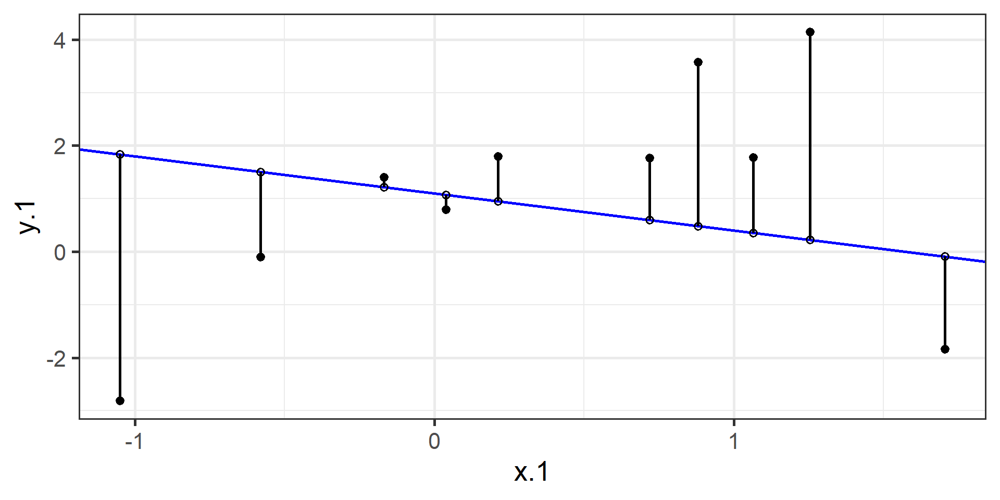
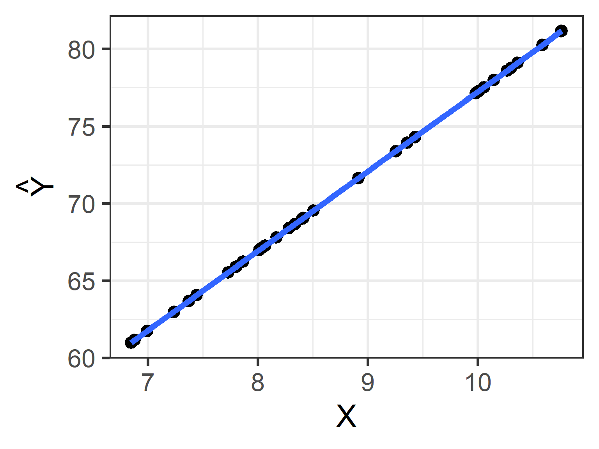
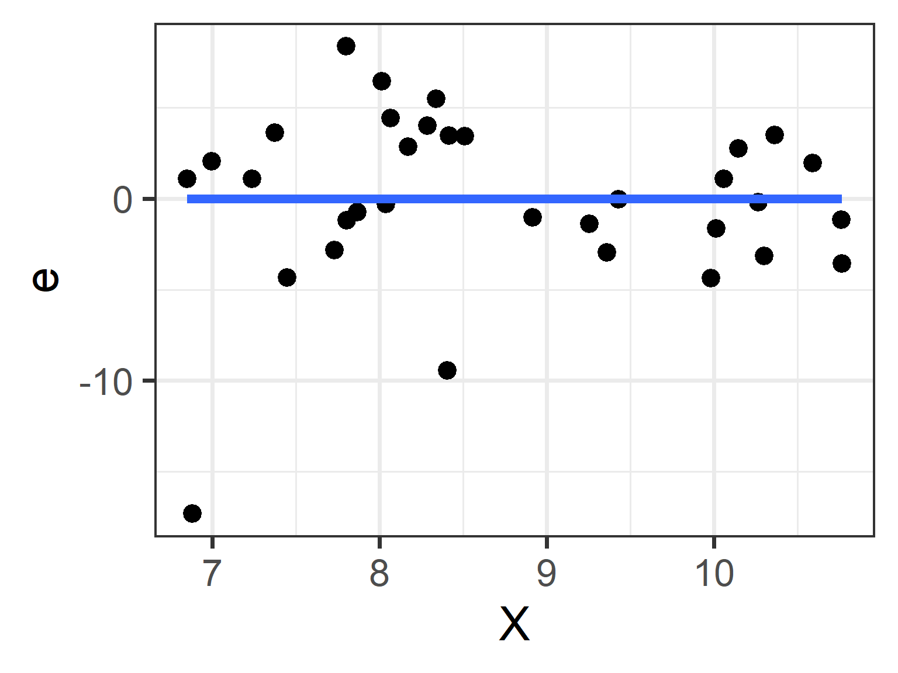
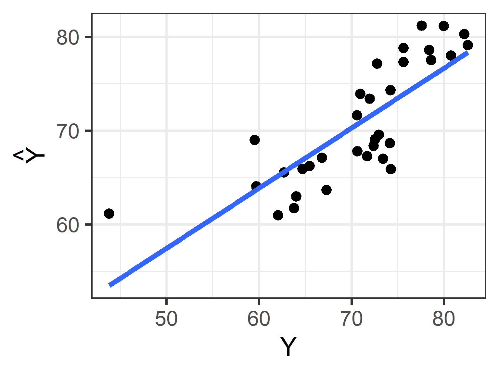
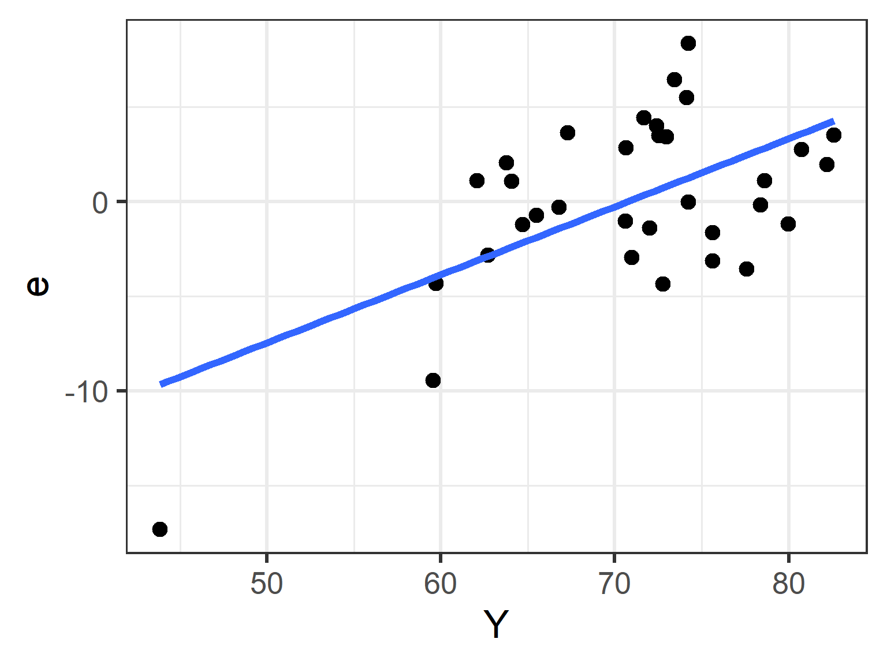
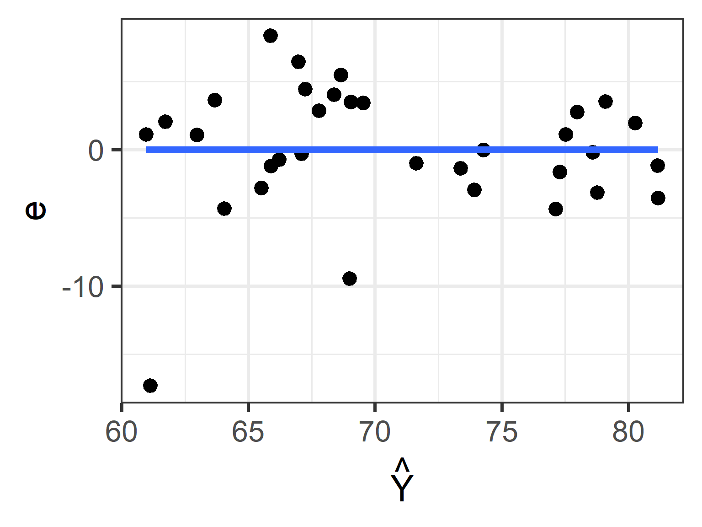
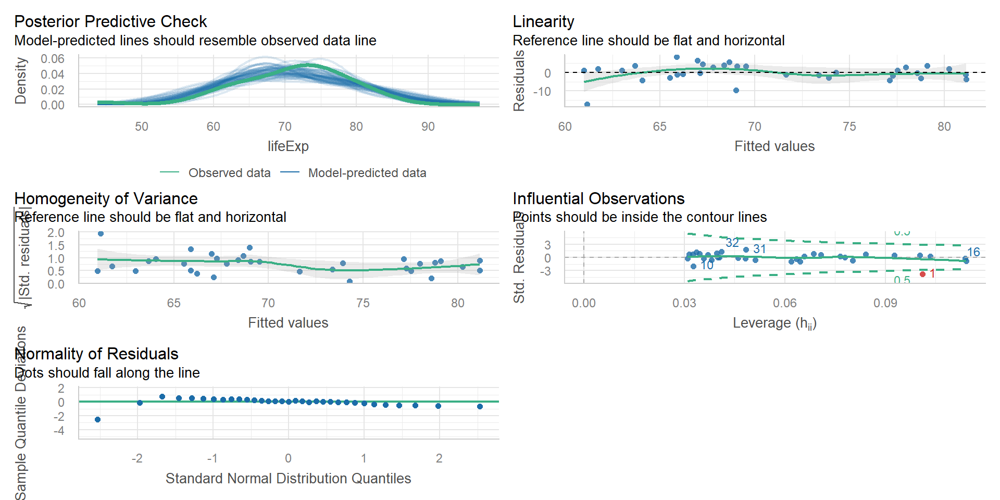
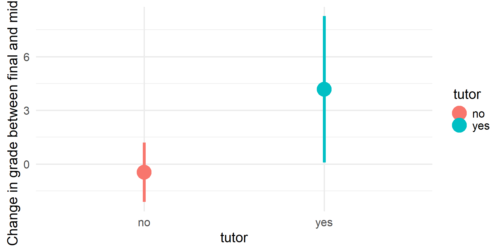
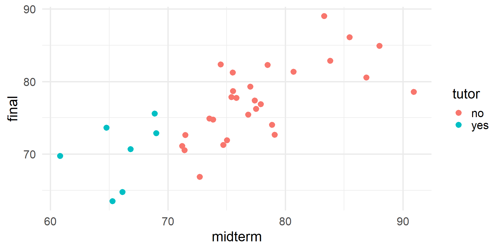
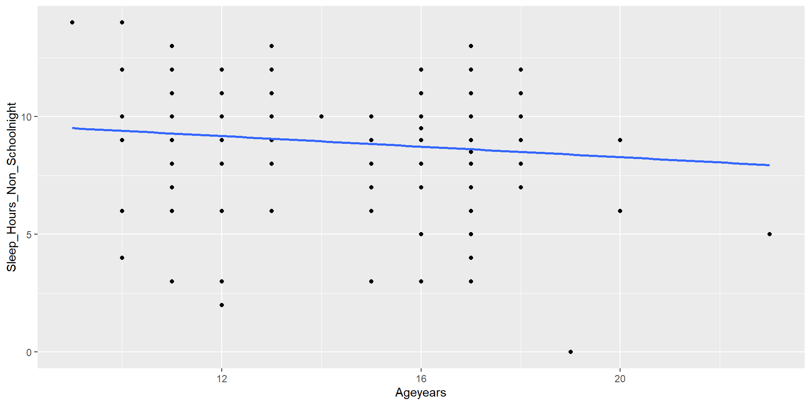

Week 07: Simple Regression
Date: October 5, 2025
Today…
Regression
Why use regression?
One equation to rule them all
Overview of Regression
Regression is a general data analytic system
Lots of things fall under the umbrella of regression
This system can handle a variety of forms of relations and types of variables
The output of regression includes both effect sizes and statistical significance
We can also incorporate multiple influences (IVs) and account for their intercorrelations
Uses for regression
Adjustment: Take into account (control) known effects in a relationship
Prediction: Develop a model based on what has happened previously to predict what will happen in the future
Explanation: examining the influence of one or more variable on some outcome
Study Design & Collection
Design - When data are collected
Retrospective/Prospective
Longitudinal
Cross-Sectional
Collection - How data are collected
Experimental
Field
Observational
Meta-analysis
Neuroimaging/Psychophysiology
Survey
Quasi-Experimental
Regression Equation
With regression, we are building a model that we think best represents the data, and the broader world
\[ Data = Model + error \]
At the most simple form we are drawing a line to characterize the linear relationship between the variables so that for any value of x we can have an estimate of y
\[ Y = mX + b \]
Y = Outcome Variable (DV)
m = Slope Term
X = Predictor (IV)
b = Intercept
Regression Equation
Overall, we are providing a model to give us a “best guess” on predicting
Let’s “science up” the equation a little bit:
\[ Y_i = b_0 + b_1X_i + e_i \]
This equation is capturing how we are able to calculate each observation ( \(Y_i\) )
\[ \hat{Y_i} = b_0 + b_1X_i \]
This one will give us the “best guess” or expected value of \(Y\) given \(X\)
Regression Equation
There are two ways to think about our regression equation. They’re similar to each other, but they produce different outputs.
\[Y_i = b_{0} + b_{1}X_i +e_i\]
\[\hat{Y_i} = b_{0} + b_{1}X_i\]
The model we are building by including new variables is to explain variance in our outcome
Note
\(\hat{Y}\) signifies the fitted score – no errorThe difference between the fitted and observed score is the residual (\(e_i\))There is a different e value for each observation in the dataset
Expected vs. Actual
\[Y_i = b_{0} + b_{1}X_i + e_i\]
\[\hat{Y_i} = b_{0} + b_{1}X_i\]
\(\hat{Y}\) signifies that there is no error. Our line is predicting that exact value. We interpret it as being “on average”
Important to identify that that \(Y_i - \hat{Y_i} = e_i\).
OLS
How do we find the regression estimates?
Ordinary Least Squares (OLS) estimation
Minimizes deviations
- \[ min\sum(Y_{i} - \hat{Y} ) ^{2} \]
Other estimation procedures possible (and necessary in some cases)
compare to bad fit

OLS
The line that yields the smallest sum of squared deviations
\[\Sigma(Y_i - \hat{Y_i})^2\] \[= \Sigma(Y_i - (b_0+b_{1}X_i))^2\] \[= \Sigma(e_i)^2\]
In order to find the OLS solution, you could try many different coefficients \((b_0 \text{ and } b_{1})\) until you find the one with the smallest sum squared deviation. Luckily, there are simple calculations that will yield the OLS solution every time.
Regression coefficient, \(b_{1}\)
\[b_{1} = \frac{cov_{XY}}{s_{x}^{2}} = r_{xy} \frac{s_{y}}{s_{x}}\]
What units is the regression coefficient in?
The regression coefficient (slope) equals the estimated change in Y for a 1-unit change in X
\[\Large b_{1} = r_{xy} \frac{s_{y}}{s_{x}}\]
If the standard deviation of both X and Y is equal to 1:
\[\Large b_1 = r_{xy} \frac{s_{y}}{s_{x}} = r_{xy} \frac{1}{1} = r_{xy} = \beta_{yx} = b_{yx}^*\]
Standardized regression equation
\[\Large Z_{y_i} = b_{yx}^*Z_{x_i}+e_i\]
\[\Large b_{yx}^* = b_{yx}\frac{s_x}{s_y} = r_{xy}\]
According to this regression equation, when \(X = 0, Y = 0\). Our interpretation of the coefficient is that a one-standard deviation increase in X is associated with a \(b_{yx}^*\) standard deviation increase in Y. Our regression coefficient is equivalent to the correlation coefficient when we have only one predictor in our model.
Estimating the intercept, \(b_0\)
- intercept serves to adjust for differences in means between X and Y
\[\hat{Y_i} = \bar{Y} + r_{xy} \frac{s_{y}}{s_{x}}(X_i-\bar{X})\]
if standardized, intercept drops out
otherwise, intercept is where regression line crosses the y-axis at X = 0
The intercept adjusts the location of the regression line to ensure that it runs through the point \(\large (\bar{X}, \bar{Y}).\) We can calculate this value using the equation:
\[\Large b_0 = \bar{Y} - b_1\bar{X}\]
Visuals of OLS Regression
https://setosa.io/ev/ordinary-least-squares-regression/
https://observablehq.com/@yizhe-ang/interactive-visualization-of-linear-regression
Example (by hand)
vars n mean sd median trimmed mad min max range skew kurtosis
log_gdp 1 33 8.74 1.24 8.41 8.73 1.42 6.85 10.76 3.91 0.21 -1.37
lifeExp 2 33 70.73 7.96 72.40 71.31 7.70 43.83 82.60 38.77 -1.07 1.79
se
log_gdp 0.22
lifeExp 1.39[1] 0.8003474If we regress lifeExp onto log_gdp:
In R
Call:
lm(formula = lifeExp ~ log_gdp, data = gapminder)
Residuals:
Min 1Q Median 3Q Max
-17.314 -1.650 -0.040 3.428 8.370
Coefficients:
Estimate Std. Error t value Pr(>|t|)
(Intercept) 25.6501 6.1234 4.189 0.000216 ***
log_gdp 5.1573 0.6939 7.433 0.0000000226 ***
---
Signif. codes: 0 '***' 0.001 '**' 0.01 '*' 0.05 '.' 0.1 ' ' 1
Residual standard error: 4.851 on 31 degrees of freedom
Multiple R-squared: 0.6406, Adjusted R-squared: 0.629
F-statistic: 55.24 on 1 and 31 DF, p-value: 0.00000002263Data, fitted, and residuals
# A tibble: 6 × 8
lifeExp log_gdp .fitted .resid .hat .sigma .cooksd .std.resid
<dbl> <dbl> <dbl> <dbl> <dbl> <dbl> <dbl> <dbl>
1 43.8 6.88 61.1 -17.3 0.101 3.63 0.796 -3.76
2 75.6 10.3 78.8 -3.15 0.0802 4.89 0.0199 -0.676
3 64.1 7.24 63.0 1.08 0.0765 4.93 0.00224 0.233
4 59.7 7.45 64.1 -4.33 0.0646 4.86 0.0294 -0.923
5 73.0 8.51 69.5 3.43 0.0314 4.89 0.00836 0.718
6 82.2 10.6 80.3 1.94 0.100 4.92 0.00994 0.422 vars n mean sd median min max range skew kurtosis se
lifeExp 1 33 70.73 7.96 72.40 43.83 82.60 38.77 -1.07 1.79 1.39
log_gdp 2 33 8.74 1.24 8.41 6.85 10.76 3.91 0.21 -1.37 0.22
.fitted 3 33 70.73 6.37 69.00 60.98 81.16 20.19 0.21 -1.37 1.11
.resid 4 33 0.00 4.77 -0.04 -17.31 8.37 25.68 -1.37 3.29 0.83
.hat 5 33 0.06 0.03 0.05 0.03 0.11 0.08 0.60 -0.98 0.00
.sigma 6 33 4.84 0.23 4.90 3.63 4.93 1.30 -4.53 20.90 0.04
.cooksd 7 33 0.04 0.14 0.01 0.00 0.80 0.80 5.08 25.12 0.02
.std.resid 8 33 0.00 1.02 -0.01 -3.76 1.77 5.53 -1.44 3.56 0.18The relationship between \(X_i\) and \(\hat{Y_i}\)
The relationship between \(X_i\) and \(e_i\)
The relationship between \(Y_i\) and \(\hat{Y_i}\)
The relationship between \(Y_i\) and \(e_i\)
The relationship between \(\hat{Y_i}\) and \(e_i\)
Using easystats
Using sjPlot
Regression to the mean
An observation about heights was part of the motivation to develop the regression equation: If you selected a parent who was exceptionally tall (or short), their child was almost always not as tall (or as short).
Code
library(psychTools)
library(tidyverse)
heights = psychTools::galton
mod = lm(child~parent, data = heights)
point = 902
heights = broom::augment(mod)
heights %>%
ggplot(aes(x = parent, y = child)) +
geom_jitter(alpha = .3) +
geom_hline(aes(yintercept = 72), color = "red") +
geom_vline(aes(xintercept = 72), color = "red") +
theme_bw(base_size = 20)Regression to the mean
This phenomenon is known as regression to the mean. This describes the phenomenon in which an random variable produces an extreme score on a first measurement, but a lower score on a second measurement.
Regression to the mean
This can be a threat to internal validity if interventions are applied based on first measurement scores.


Another Dataset
Statistical Inference
The way the world is = our model + error
How good is our model? Does it “fit” the data well?
To assess how well our model fits the data, we will examine the proportion of variance in our outcome variable that can be “explained” by our model.
To do so, we need to partition the variance into different categories. For now, we will partition it into two categories: the variability that is captured by (explained by) our model, and variability that is not.
Partitioning variation
Let’s start with the formula defining the relationship between observed \(Y\) and fitted \(\hat{Y}\):
\[Y_i = \hat{Y}_i + e_i\]
One of the properties that we love about variance is that variances are additive when two variables are independent. In other words, if we create some variable, C, by adding together two other variables, A and B, then the variance of C is equal to the sum of the variances of A and B.
Why can we use that rule in this case?
Partitioning variation
\(\hat{Y}_i\) and \(e_i\) must be independent from each other. Thus, the variance of \(Y\) is equal to the sum of the variance of \(\hat{Y}\) and \(e\).
\[\large s^2_Y = s^2_{\hat{Y}} + s^2_{e}\]
Recall that variances are sums of squares divided by N-1. Thus, all variances have the same sample size, so we can also note the following:
\[\large SS_Y = SS_{\hat{Y}} + SS_{\text{e}}\]
A quick note about terminology: I demonstrated these calculations using \(Y\), \(\hat{Y}\) and \(e\). However, you may also see the same terms written differently, to more clearly indicate the source of the variance…
\[ SS_Y = SS_{\hat{Y}} + SS_{\text{e}}\] \[ SS_Y = SS_{\text{Model}} + SS_{\text{Residual}}\]
The relative magnitudes of sums of squares provides a way of identifying particularly large and important sources of variability.
Coefficient of Determination
\[\Large \frac{SS_{Model}}{SS_{Y}} = \frac{s_{Model}^2}{s_{y}^2} = R^2\]
\(R^2\) represents the proportion of variance in Y that is explained by the model.
\(\sqrt{R^2} = R\) is the correlation between the predicted values of Y from the model and the actual values of Y
\[\large \sqrt{R^2} = r_{Y\hat{Y}}\]
Example
Call:
lm(formula = Sleep_Hours_Non_Schoolnight ~ Ageyears, data = school)
Residuals:
Min 1Q Median 3Q Max
-8.3947 -0.7306 0.3813 1.2694 4.5974
Coefficients:
Estimate Std. Error t value Pr(>|t|)
(Intercept) 10.52256 0.90536 11.623 <0.0000000000000002 ***
Ageyears -0.11199 0.05887 -1.902 0.0585 .
---
Signif. codes: 0 '***' 0.001 '**' 0.01 '*' 0.05 '.' 0.1 ' ' 1
Residual standard error: 2.204 on 204 degrees of freedom
(1 observation deleted due to missingness)
Multiple R-squared: 0.01743, Adjusted R-squared: 0.01261
F-statistic: 3.619 on 1 and 204 DF, p-value: 0.05854[1] 0.01742975Example
Example
The correlation between X and Y is:
. . .
If we square the correlation, we get:
. . .
Ta da!
Example in R
Try some live coding! Also known as “Another opportunity for Dr. Haraden to potentially embarrass himself”
https://archive.ics.uci.edu/dataset/320/student+performance
https://archive.ics.uci.edu/dataset/697/predict+students+dropout+and+academic+success